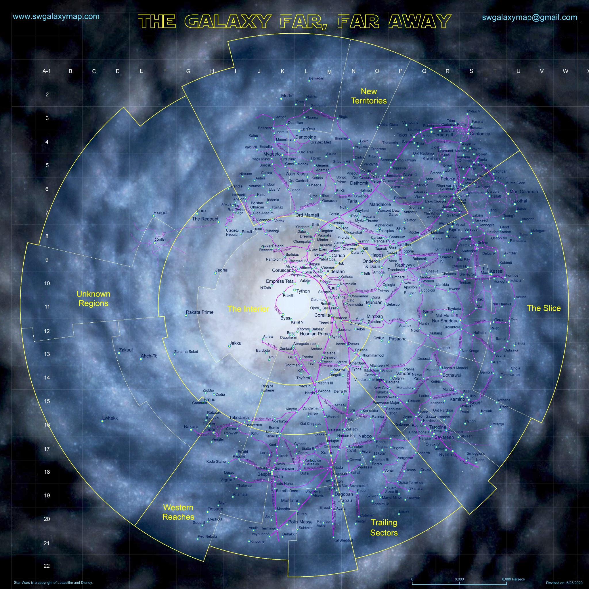

+
−
≪
⌂
Galactic Campaign Board
Rolle:
Admin
Eventleiter / KUS
Republic Navy / GAR
Viewer
Login
Schematic Map
Export JSON
Schichten
⋮⋮
Planeten
⋮⋮
Planetennamen
⋮⋮
Frontline / Influence
⋮⋮
Hyperraum-Routen
⋮⋮
Contested / Neutral Overlay
⋮⋮
GAR-Flotten
⋮⋮
KUS-Flotten
⋮⋮
Raster
⋮⋮
Sektoren / Regionen
Map
Flottenmanagement
Schiffbau
Login Manager
MVP v2: Flotten snappen auf Sternsysteme. Alt+Drag als Admin kalibriert Planetenpositionen.
Map attribution: W. R. van Hage / CC-BY-SA & GFDL • Powered by your campaign logic